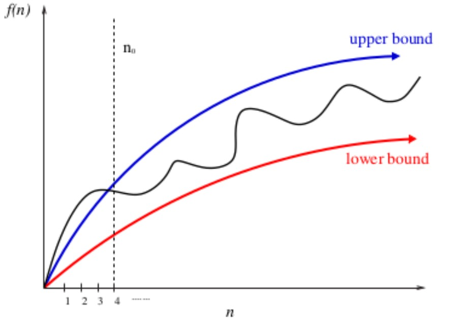
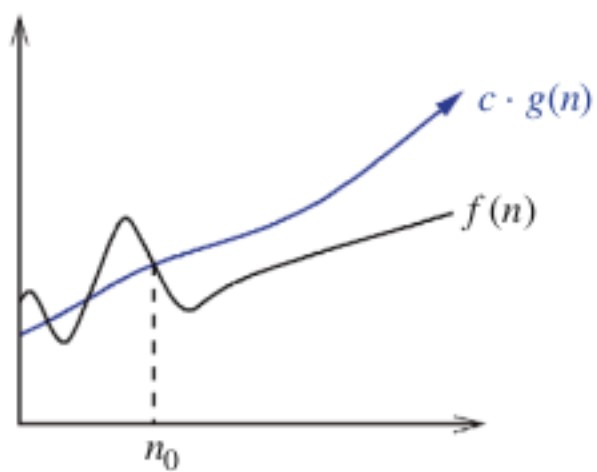
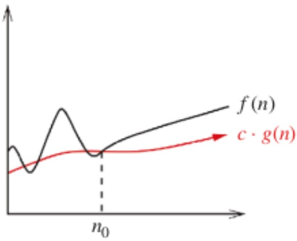
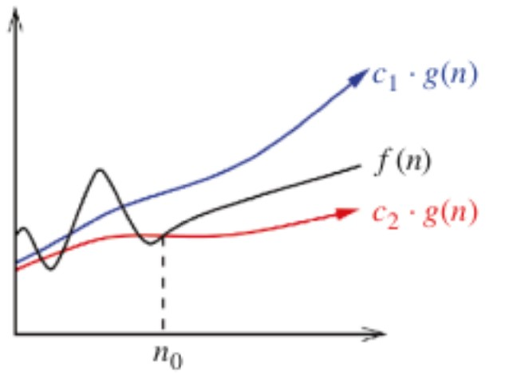
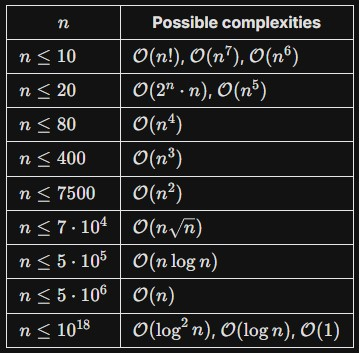
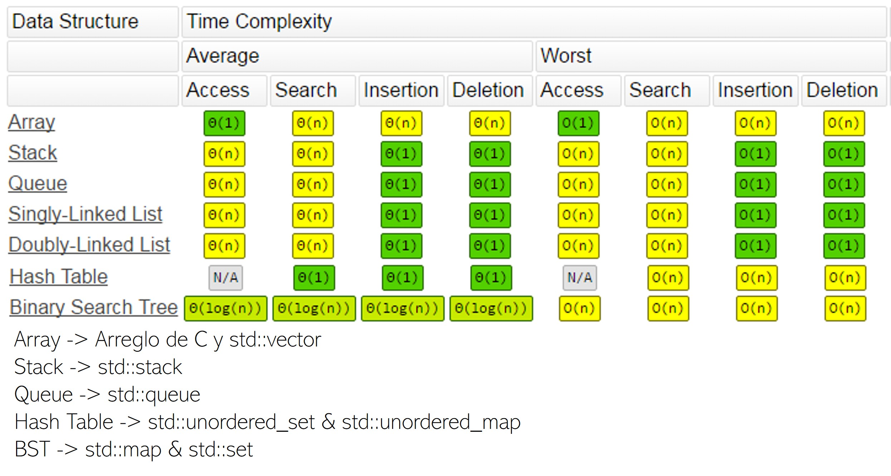
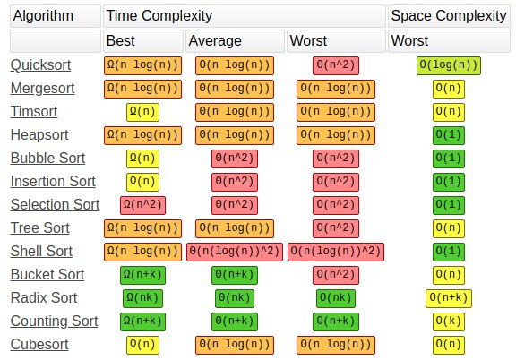

Algorithmic Complexity
Contents
Algorithm Analysis
Given the maximum input bound, can the currently
developed algorithm, with its time/space complexity,
pass the time/memory limit for that particular problem?
It is important to study algorithm analysis because in competitive
programming problems, we often have to deal with very large inputs/outputs,
and we must be able to know when a proposed solution
will pass the time/memory constraints given to the problem.
We have to know it before start coding the solution, implementing it with no sense
could be the difference in a competition between team i and i+1.
Start coding an algorithm only when you know it is correct and fast enough.
The algorithm complexity will decide if it's worth it to implement a certain algorithm
or if it's necessary to optimize it using sophisticated techniques or
attack the problem with another approach.
Computers, in general, can run \( 10^8 \) operations per second, we can use this information
to know if our algorithm will run in time.
This number can change a little (sometimes not that little) depending on the programming language
we're using.
- C++ : \( 10^8 \)
- Java : \( 10^{7.3} \)
- Python : \( 10^7 \)
\( 10^8 \) = 100,000,000 = 100M
Choosing the most convenient language to approach a specific problem is also important, and it's
something else the algorithmic complexity could help us with.
Algorithms can be analyzed from two perspectives:
- Time : Measured in units of time (usually seconds) and represents the amount of time needed for an algorithm to complete.
- Memory : Measured in units of memory (usually MB) and represents the amount of memory used by the algorithm.
Time and Memory have an indirect relationship.
Usually, if we want less time, we need more memory, and vice versa.
Together they build the space and temporal complexity of a solution.
The space complexity is strongly related to the time complexity. Once we choose the algorithm and the
data structures we'll be using, there exists a balance between the size of the DS (space), and the
time it takes to it to do the operations needed.
The RAM Model (Kind of)
We need techniques to compare the efficiency of algorithms before implementing them.
Techniques such as the RAM Model, and the Asymptotic Analysis (Big O notation).
Machine-independent algorithms depend on a hypothetical computer called a Random Access Machine.
In the RAM model, we measure run time by counting the number of steps an algorithm takes on a given problem instance.
What does a cycle depend on and how does it evolve?
We cannot know the exact number of operations our algorithm will do on execution,
but we can do an analysis of its general behavior and make decisions based on that.
Some rules:
- Each single operation takes one-time step, its constant: \( +, -, *, /, =, <, >, ==, !=, \) if, switch
- Each memory access takes exactly one time step.
-
Loops and subroutines are a composition of multiple single operations.
The time step of a loop depends on the number of iterations the loop makes.
Variations in complexity are caused by cycles.
- Separated sentences are added.
- Nested sentences are multiplied.
Big O notation
Provides a better intuition than the RAM Model since it requires too much detail to specify precisely its behavior,
and many times the step count depends on the programmer.
Big O notation solves this issue by providing upper and lower bounds of time complexity functions.
Big O notation ignores multiplicative constants:
\( f(n) = 2n \) is considered the same as \( g(n) = n \).
Upper and lower bounds are valid for \( n > n_0 \).

\( f(n) = O( g(n) ) \; ; \; f(n) \leq c \cdot g(n) \)

\( f(n) = \Omega( g(n) ) \; ; \; f(n) \geq c \cdot g(n) \)

\( f(n) = \Theta( g(n) ) \; ; \; c_2 \cdot g(n) \leq f(n) \leq c_1 \cdot g(n) \)

Most common complexities
Ordered from the best to the worst one:
-
\( O(1) \) :
Always do the same number of operations.
The constant could be enormous.
Ex. Guessing a password by brute force of \( n \) digits takes \( 10^n \).
-
\( O(log(n)) \) :
Usually base 2, but could be in any other base.
Binary search.
-
\( O(\sqrt{n}) \) :
Common in algorithms related to prime numbers or divisors.
Related to number theory.
-
\( O(n) \) :
Pretty common.
IO setting.
-
\( O(nlog(n)) \) :
Shows up in sorting problems, sparse tables...
Usually, \( log \) is \( log_2 \).
-
\( O(n^2) \) :
Pretty common.
-
\( O(n^k) \) :
Polynomial complexities.
Multidimensional arrays of \( k \) dimensions (\( k \) is a constant).
-
\( O(2^n), \; O(10^n), \; O(n^m) \) :
Let \( m \) be another variable.
Hanoi's Towers of \( n \) disks take obligatory \( 2^{n-1} \) steps.
-
\( O(n!) \) :
Bogosort.
Combinatorics.
Approximation to possible valid complexities on standard time according to the entry of competitive programming problems.

Complexity of operations in C++ implementation of Data Structures (STL).

Complexity of common sorting algorithms.

Codeforces problems to analyze!

Codeforces 266B - Queue at the school
Codeforces 1932A - Thorns and Coins
Codeforces 270A - Fancy Fence
Codeforces 2042A - Greedy Monocarp
Codeforces 1165B - Polycarp Training
Codeforces 1743A - Password
Codeforces 1709B - Also Try Minecraft
Codeforces 2050C - Uninteresting Number
Codeforces 2051C - Preparing for the Exam
Codeforces Contest 1249